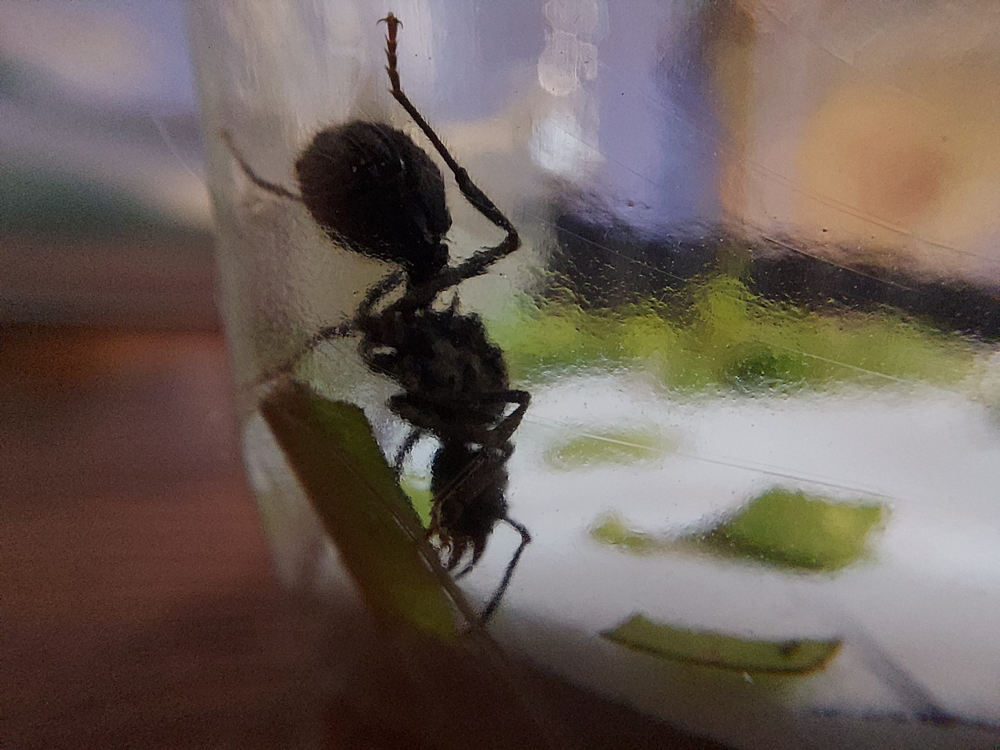

Hormigas & co.
La casa de la mirmecología argentina

Acromyrmex
También llamada hormiga cortadora de hojas o cultivadora de hongos
El género Acromirmex es uno de los más conocidos por el público en general, tal vez debido que es considerado una plaga en la mayoría de los jardines hogareños.
Como su nombre vulgar nos adelanta la principal tarea de este género, y por ello lo que las diferencia del resto, es que cultivan un hongo especial (de hecho un moho) el cual se aliimenta de algunas plantas.
Para que el cultivo prospere las obreras cortan, trasladan, mastican y depositan trozos de hojas, flores o incluso frutos en una sala especial del hormiguero llamada honguera.